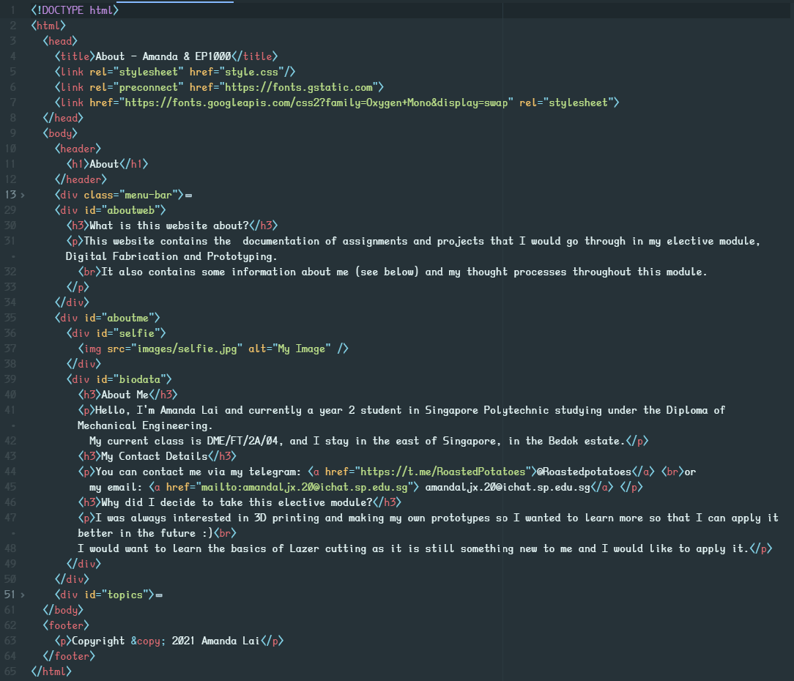
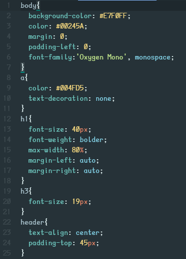
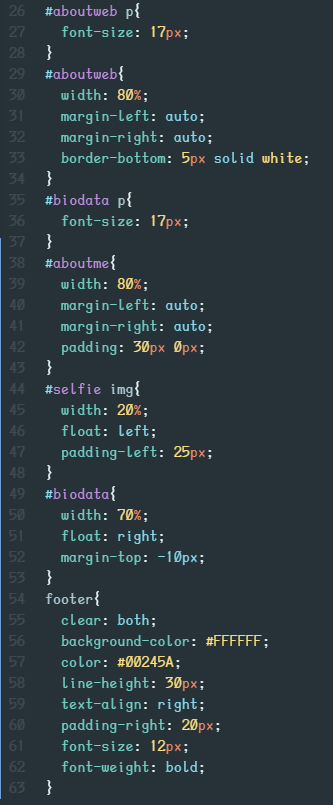
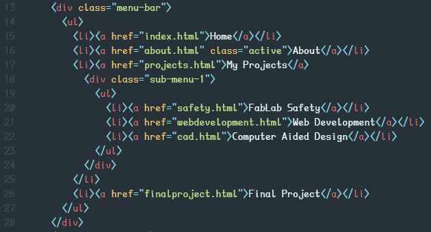
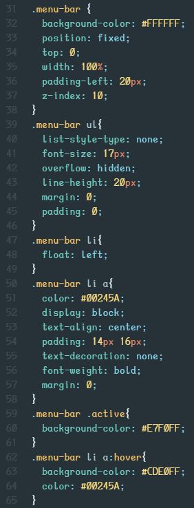
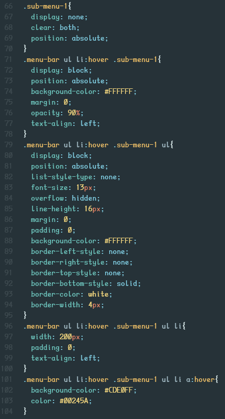

Creation of this website
I used Atom to write my codes for this website and I found that a few packages and themes in Atom made the editing process a lot easier. These packages and themes are: 1. atom-html-preview package by harmsk 2. atom-material-syntax theme by atom-material 3. fonts by braver.
Before I created the website I thought about a simple template for my "About" page.
After creating the sufficient HTML and CSS files, I uploaded my website to GitHub. I go through the steps on how to do this below, click here to jump to that
Process in creation
To start off I watched Learn CSS in 12 Minutes by Jake Wright. You should watch this if you want to get a simple understanding of website layouts.
I first created a HTML file called about.html, note that the first page of your website must be called index.html but subsequent ones can have any name of your choice. Next I gave my page a title, a header, some content (body) and a footer. I then reorganised the body content into different divisions with different IDs. I later added in a navigation bar, for this I will go into more details later on.
To make my wesite look the way it is, I used a stylesheet written in CSS called style.css. This is what makes the website have an organised and aesthetic feel to it. Without this, the website would just be very plain and full of text without any design or filled with misaligned images and texts. To use this stylesheet you need to link it to your HTML file in the head segment.
There are many other elements in this website that also made use of CSS stylesheets and they will be listed below.
HTML file for "About" page
This is what my about.html file contains. I will talk about the navigation bar later on.

CSS file for "About" page
This is what my style.css file contains for the 'About' page. I changed my font to the current one by adding a link in the html file as you can find above. This font "Oxygen Mono" by Veron Adams can be found here.


Navigation bar creation
To start off I created a simple unordered list using the class function. This was placed in the body. I wanted my navigation bar to have a dropdown function when I hovered over it. I wanted it to also stay at the top of my page when I scrolled down. For this navigation bar I used references from W3Schools and How To Make Drop Down Menu Using HTML And CSS by Easy Tutorials.
Here is the HTML codes for the navigation bar. Remember to put the active tag on the link that is currently active so that your CSS will work.

This is the CSS code I used for my navigation bar. It is not perfect but it works and does its job. There are some things that I couldn't figure out a way to change but it looks fine, just don't stare too long at it :).

